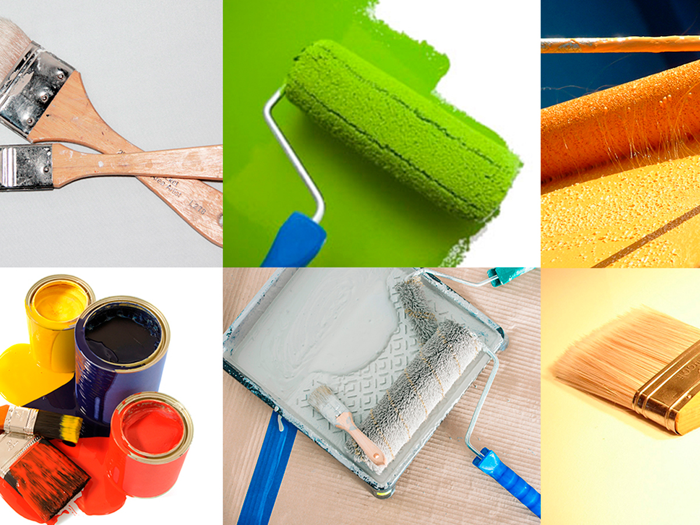

Tipo de superficie: Asegúrate de elegir el tipo de pintura adecuado para la superficie a pintar. No todas las pinturas funcionan igual en madera, metal, concreto o drywall.
Condiciones climáticas: Si estás pintando superficies exteriores, asegúrate de elegir una pintura resistente a la intemperie. Las pinturas para exteriores deben ser resistentes a la lluvia, el sol y el frío.
Durabilidad y mantenimiento: Si necesitas un acabado que dure mucho tiempo y sea fácil de limpiar, opta por esmaltes, lacas o pinturas satinadas/brillantes.
Número de capas: Algunas pinturas cubren más que otras, por lo que podrías necesitar menos capas. Revisa las especificaciones del producto para saber cuántas capas se requieren para un acabado perfecto.
Tamaño y presentación: Las ferreterías suelen ofrecer pinturas en diferentes tamaños (litros o galones). Es importante elegir el tamaño adecuado para evitar sobrecargar el espacio o quedarte corto.
Prueba del color: Muchas ferreterías ofrecen muestrarios de color, lo que te permite ver cómo quedará la pintura en la superficie. A veces es útil comprar una pequeña muestra antes de realizar una compra más grande.